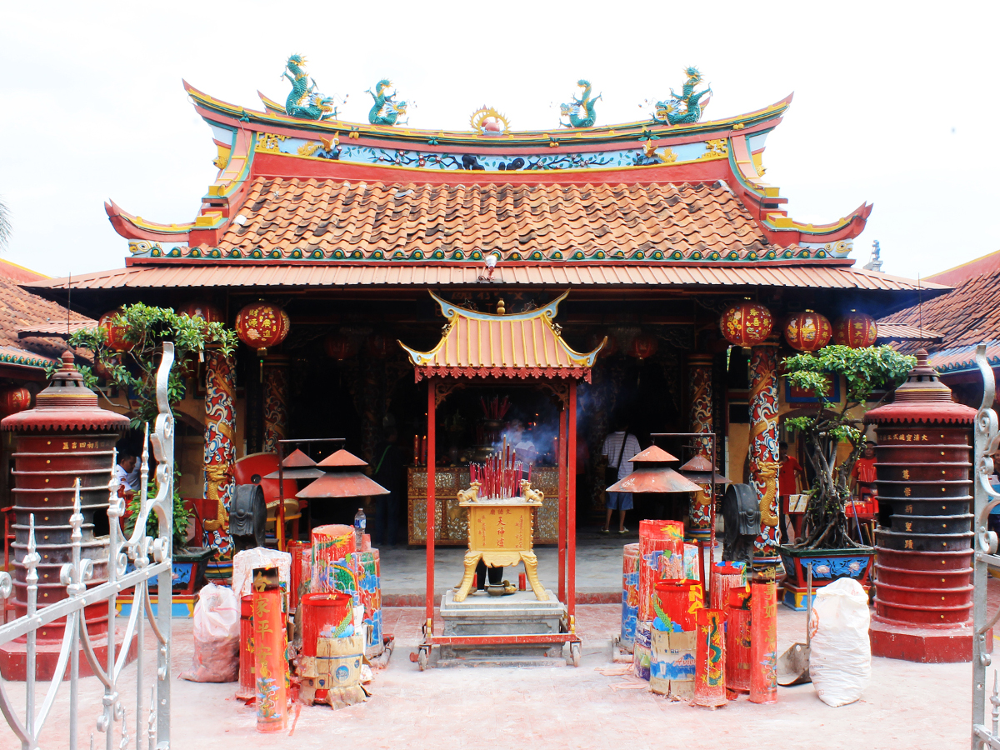

Kali Pasir
Masjid Jami Kalipasir terletak di Kelurahan Sukasari, Kecamatan Tangerang, Kota Tangerang, Menjadi masjid tertua di Kota Tangerang, kini usianya sudah 445 tahun.
Read More

Kelenteng Boen Tek Tio
Kelenteng tertua di Kota Tangerang, selain Klenteng Boen San Bio.Dibangun pada tahun 1684, Boen Tek Bio merupakan bagian penting dari sejarah Kota Benteng, khususnya sejarah permukiman kaum Cina Benteng di Tangerang. Bagian tertua dari bangunan ini berasal dari tahun 1775.
Read More
Pasar Lama Tangerang
Kawasan Pasar Lama Tangerang memiliki beragam tempat wisata yang menarik untuk dikunjungi. Mulai wisata sejarah di beberapa bangunan tua, hingga wisata kuliner pada malam hari.
Read More